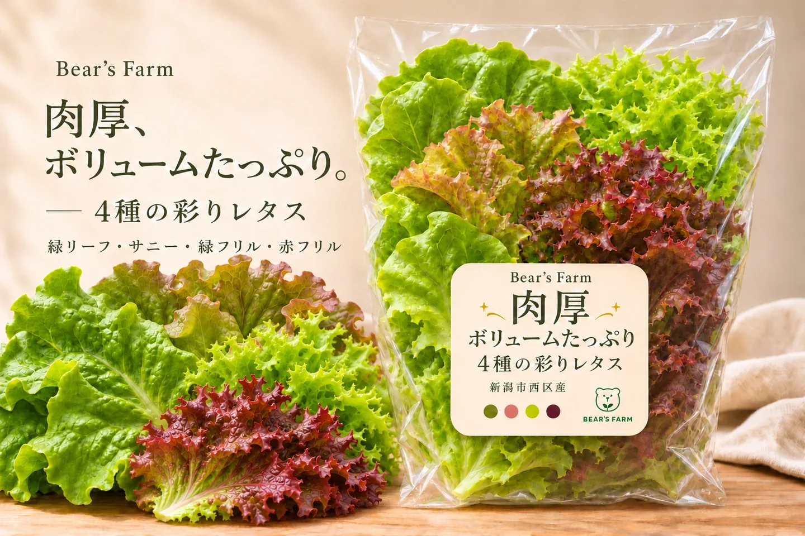

THIS MONTH’S FAVORITE / 01
4種の彩りレタス
肉厚、ボリュームたっぷり。
緑リーフ・サニー・緑フリル・赤フリル。
色と葉の表情が重なる、今月のイチオシです。
緑リーフサニー緑フリル赤フリル

THIS MONTH’S LINEUP
肉厚な葉、軽やかなフリル、鮮やかな色。
まず出会ってほしい、今月のふたつ。
THIS MONTH’S FAVORITE / 01
肉厚、ボリュームたっぷり。
緑リーフ・サニー・緑フリル・赤フリル。
色と葉の表情が重なる、今月のイチオシです。
THIS MONTH’S FAVORITE / 02
肉厚レタスに、彩りと香りを。
レタス・ラディッシュ・ルッコラを合わせた、
食卓に飾りたくなるひと袋。
MORE FROM OUR GARDEN
しっかりした茎、シャキッとした歯ごたえ。
ぎゅっと詰まった実。濃厚な味わい。
花も実も楽しむ、華やかなひと品。
バジル SOLD OUT
イタリアンパセリ・ルッコラ・セルバチカ
※ バジルは現在栽培中です。
オレガノ・タイム
ディル・フェンネル SOLD OUT
※ ディル・フェンネルは現在栽培中です。
画像はパッケージイメージです。収穫状況によって、お届けできる品種・数量は変わります。